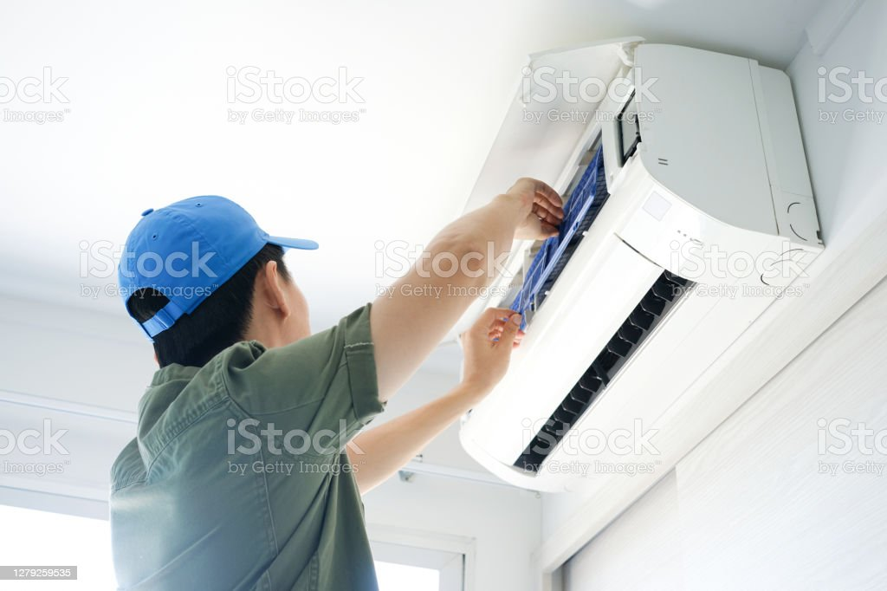

Aprenda más
Aires de consolas
Son equipos muy delicados, potentes y efectivos, necesitan por los menos de un mantenimiento mensual, pues el polvo acumulado en ello restringue el paso del aire y dismuye su efeciciencia y puede dañarse.
Aprenda más